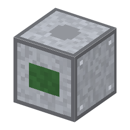

説明
①子ども 光の代わりに電子で見る顕微鏡。光では見えない、とても細かい物まで見える。
②学生 鋼×4＋W線＋銅ケーブル×2＋変圧器＋整流器。電気 2kW。隣の真空容器が 0.01Pa 以下（拡散ポンプ）でないと動かない。入口にマスクやウェハーを入れると、光学顕微鏡と見比べて、細かい線が見えるかが出る。
③大人 1931年、ドイツのルスカとクノールは銅のコイルの電磁レンズで電子の像を結び、1933年に光学顕微鏡の分解能を超えた。ルスカは1986年にノーベル物理学賞を受けた。
④ガチ 電子も波（ド・ブロイ 1924）で、数万V で速めると波長は光の 10 万分の1ほど。ただし磁気レンズのゆがみ（収差）で、実際の分解能は 1930年代末で 10nm ほどだった。今の半導体工場では、走査型電子顕微鏡（SEM、1965）で回路の線幅を測る。
作り方
使い道
（このアイテムを使うレシピは無い）